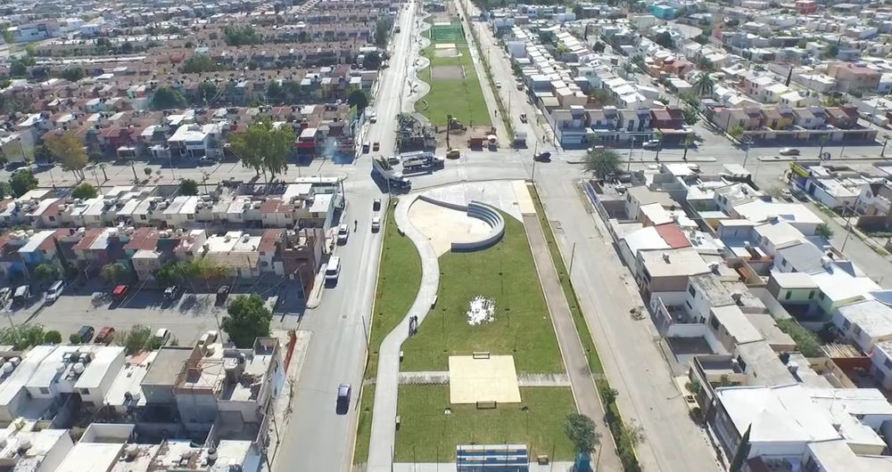
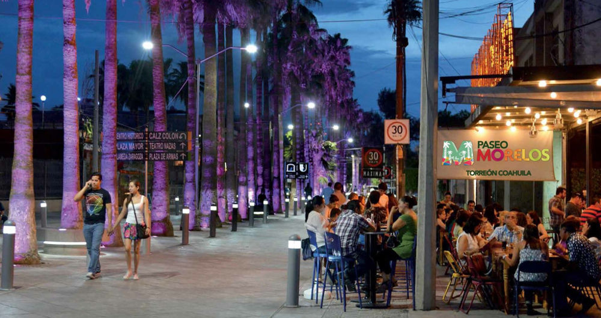
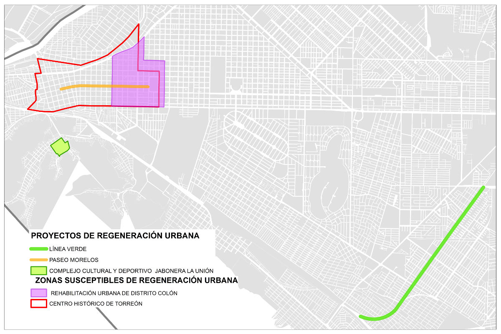

Las ciudades cambian constantemente por muchos factores, como son el crecimiento exponencial de la densidad de población, el desarrollo de una nueva zona habitacional, la creación de un nuevo centro comercial, por alguna coyuntura económica, entre muchas otras razones.
Torreón a pesar de ser una ciudad joven se ha transformado con el paso de los años, sus colonias y calles han sufrido cambios radicales que han modificado su estructura por completo. Dentro de estas transformaciones ha habido modificaciones que han sido beneficiosas y otras que no, algunas zonas de la ciudad han quedado abandonadas y olvidadas.
Afortunadamente, poco a poco, aquellas zonas que habían sido relegadas de todo cambio positivo por fin están reviviendo. A esto se le llama regeneración urbana, un fenómeno de rehabilitación de alguna zona o espacio que había quedado olvidado, o que estaba en condiciones deplorables.
Es el caso de la avenida Morelos donde por años esta vialidad quedó en el abandono y descuido de las viviendas y comercios que se encontraban ubicados en ella, pero que en la actualidad su semblante es otro y su futuro es muy alentador gracias a la intervención de la regeneración urbana, trayendo nuevos negocios y actividades al centro histórico.
Otro ejemplo es la Plaza Mayor ubicada en el corazón del Centro Histórico de Torreón. Si bien su concepción implicó la demolición de varios edificios con gran historia para la ciudad, hoy es un espacio donde se puede vivir una gran cantidad de exposiciones de diferentes tipos, actividades culturales, musicales entre otros, trayendo con ello una reactivación de las actividades económicas de su entorno urbano inmediato.
Un caso más es Línea Verde de Torreón, ubicada en el oriente de la ciudad en el derecho de vía del ferrocarril en desuso, se había convertido en un basurero y foco de infecciones causadas por la fauna nociva, también representaba un borde físico que desconectaba y causaba inseguridad entre los habitantes de la zona.
Se puede entender a la regeneración urbana como la visión y acción comprensiva e integral que se dirige hacia la solución de problemas urbanos y que busca dar un mejoramiento permanente en las condiciones físicas, económicas, sociales y culturales de un área que ha sido objeto de cambio. Para que esto sea efectivo se requiere de propiciar la participación de todos los actores que se encuentren involucrados para lograr con éxito este proceso de cambio.
Para lograr la correcta implementación se debe de tener en cuenta una compleja combinación de factores sociales, económicos, ambientales, de planeación y gestión, y que además debe de estar acompañada de estrategias que permitan reconocer las problemáticas estructurales que han generado los procesos de deterioro y ser sensibles a las tendencias y necesidades urbanas que cada sector de la ciudad necesita. El objetivo es combinar estos factores de modo que mejore la calidad de vida, la estabilidad económica, el consumo de energía y dotaciones que la ciudad necesita.
Implica recuperar la funcionalidad y la revitalización de la trama urbana del municipio, para lograr el modelo de ciudad sostenible que en la actualidad se quiere alcanzar. Un sector importante para regenerar urbanamente es el Centro Histórico de la ciudad que constituye la parte más frágil de la estructura urbana del municipio por los factores que influyen en él, como el económico, social y político, cada uno con influencia y preponderancia muy específica.
Tratamientos urbanos
Se pueden implementar diferentes tratamientos según sea el caso de la estructura urbana a regenerar por ejemplo:
- La restauración: que implica la voluntad de proporcionar estructuras nuevas a una zona urbana concreta o a un barrio en específico mediante la demolición y la liberación de suelo en donde se pueden asentar infraestructuras y equipamientos que sean necesarios, como el caso de la Plaza Mayor.
- La rehabilitación: Debe trascender las habituales consideraciones urbanísticas, arquitectónicas y de conservación del Patrimonio Histórico, debe brindar soluciones adecuadas para resolver los problemas de carácter social, económico y asistencial de la población.
Consiste en implementar un conjunto de acciones coherentes y programadas, destinadas a potenciar los valores urbanos, ambientales, socioeconómicos y funcionales de una zona urbana determinada, con la finalidad de mejorar la calidad de vida de la población que vive en ella, con acciones encaminadas al mejoramiento del equipamiento e infraestructura urbana que incrementen los niveles de habitabilidad, servicios, dotaciones y espacios comunitarios que sean necesarios para tener una mejor calidad de vida.
Al poner en marcha un proyecto de regeneración urbana integral se puede mejorar sustancialmente la estructura socioeconómica de una zona urbana degradada y mejorar su integración con el resto del territorio.
Ejemplos de regeneración

Línea Verde de Torreón: Beneficia a más de 30 mil familias, Cuenta con 5 Km de ciclo vía, 5 Km de andadores peatonales, 15 estaciones de gimnasios al aire libre, 9 canchas de usos múltiples, 1 Skatepark.

Paseo Morelos: Se proyectó con una reconfiguración del concepto de movilidad en la calle Morelos con una política prioritariamente peatonal, cuenta con ornamentos como fuentes de suelo, concreto estampado, bancas, obeliscos, iluminación escénica , abarca desde de la calle González Ortega hasta la Calle Zaragoza
Plaza Mayor: Cuenta con una extensión de alrededor de13 mil metros cuadrados, se realizan diferentes eventos y actividades durante varias fechas al año como: fiestas patrióticas, conciertos, shows, maratones de baile, pistas de hielo, feria del libro, exhibiciones artísticas y culturales. Cuenta con estacionamiento subterráneo con capacidad para 700 autos, aproximadamente.
Proyectos de regeneración urbana en Torreón
